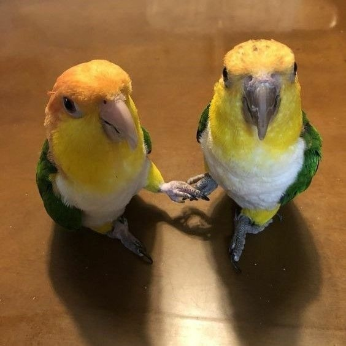
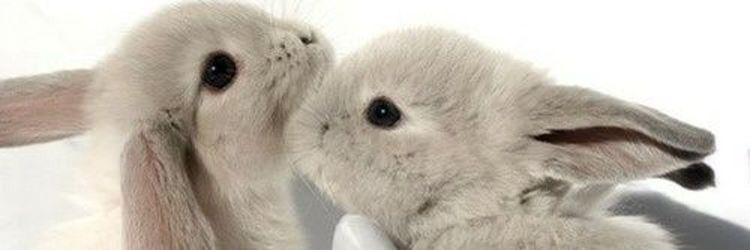
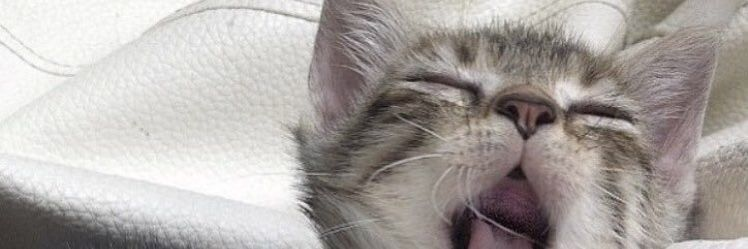

En Happy Paws somos una fundación dedicada al rescate y bienestar de animales en situación de abandono. Nacimos con el propósito de darles una segunda oportunidad a quienes más lo necesitan, brindándoles cuidado, atención y un entorno seguro mientras encuentran un hogar definitivo.
Nuestro equipo está formado por personas comprometidas y amantes de los animales que trabajan día a día en rescates, procesos de rehabilitación y campañas de adopción responsable. Creemos firmemente que cada animal merece amor, respeto y una vida digna. Más que una fundación, somos una comunidad que busca generar un cambio, creando conciencia y conectando a las personas con la oportunidad de transformar una vida a través de la adopción.


